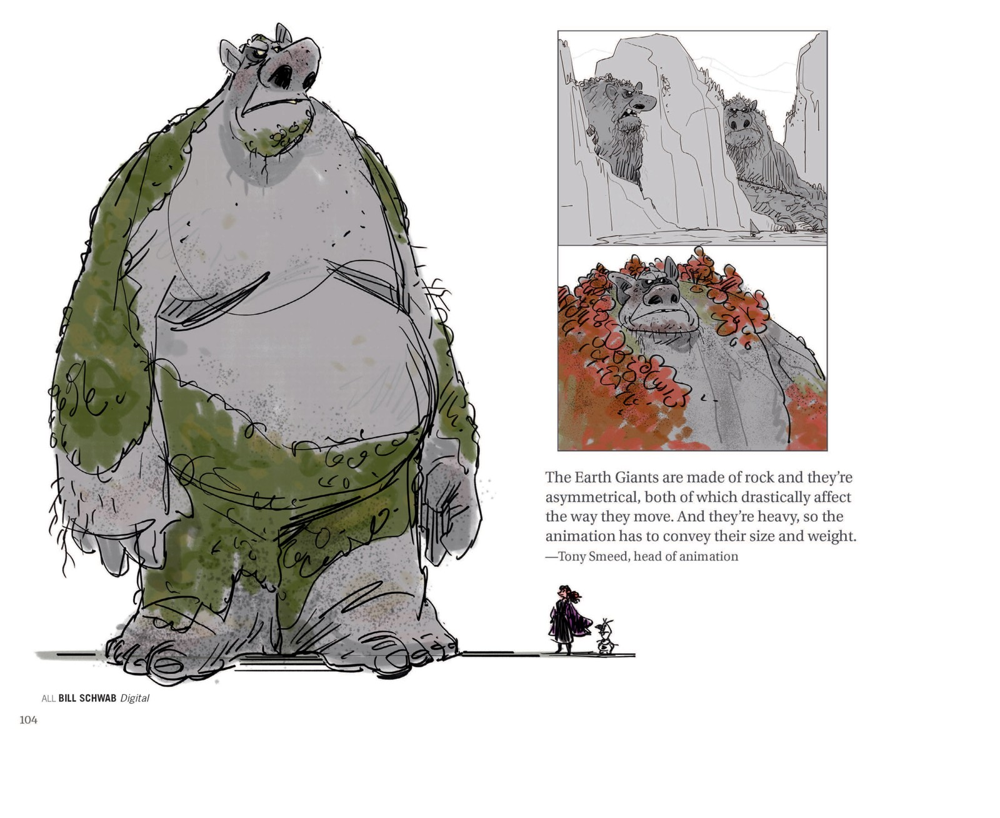
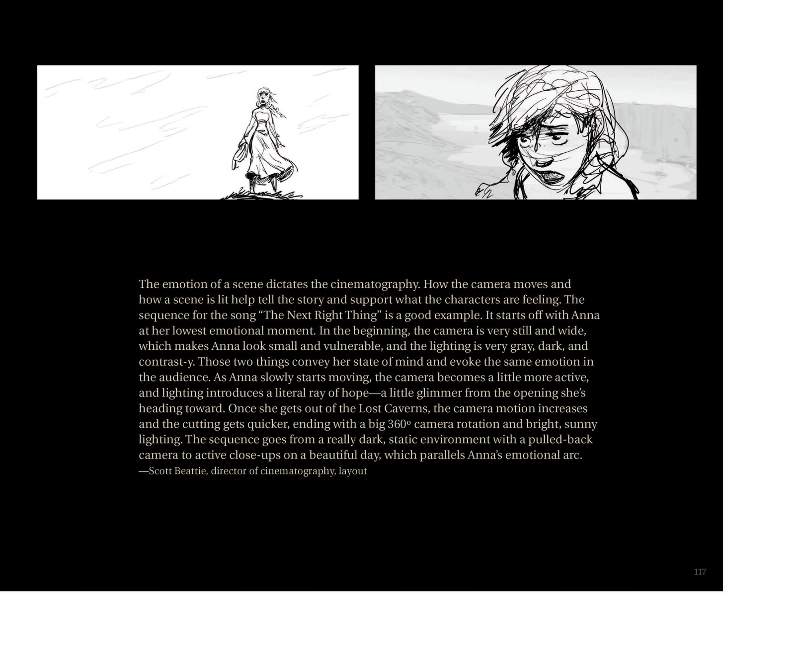

📖 设定集 · 设计稿
场景设计稿
从挪威到冰雪世界
5
本卷页数
🎨
设定集
中/英
双语
F1的城堡设计混合了两种挪威原型：木板教堂的 dramatic 尖塔与更厚重的中世纪堡垒——Giaimo 评价 Womersley 的方案「像城堡，但屋顶线条戏仿木板教堂」。F2则把小镇做「实」：街道获得名字（钟楼街、高…
🏰 设计稿
场景设计稿
从阿伦黛尔到魔法森林，从冰雪王座厅到阿塔霍兰——场景设定集原页与设计论述。
12+
场景
16
设定页
挪威
灵感源
2部
电影
🏰 《冰雪奇缘》系列的场景设计以挪威为核心灵感来源，从峡湾小镇到古老森林，从冰雪王座厅到阿塔霍兰冰川。场景不仅是故事发生的背景，更是叙事的参与者——美术指导 David Womersley 说F2的阿伦黛尔「更像一座有自己历史的欧洲古镇」。以下设定页均经原书逐页核对。
🏰 阿伦黛尔王国
F1的城堡设计混合了两种挪威原型：木板教堂的 dramatic 尖塔与更厚重的中世纪堡垒——Giaimo 评价 Womersley 的方案「像城堡，但屋顶线条戏仿木板教堂」。F2则把小镇做「实」：街道获得名字（钟楼街、高地街、皇家广场、城堡桥、风车路），布局更合乎逻辑，「让人感觉是真实永久存在的地方」。设定集还记录了被弃用的版本：城堡被洪水冲毁后以岛屿+空中桥的形式重建。

阿伦黛尔王国全景油画
满版彩色油画描绘峡湾深处的阿伦黛尔：雪峰、欧式建筑与金顶城堡，右下角红帆船点出王国的海上身份——整部影片王国气氛与配色的定调之作。

木板教堂与城堡设计
艺术团队被挪威12世纪木板教堂震撼；Giaimo 盛赞 Womersley 的城堡「像城堡，但屋顶线条与细节戏仿木板教堂」——这一混合塑造了阿伦黛尔的建筑性格。

加冕大厅内景概念
Bill Perkins 绘制的加冕大厅内景：旗幡、光窗与涌动的人群——加冕日是艾莎「最后一次正常的公开露面」。

阿伦黛尔城镇地图
「Arendelle North」俯瞰地图与街道命名：钟楼街 Klokkegate、高地街 Hoydegate、皇家广场 Kongeligplas、城堡桥 Borgbro、风车路 Vindmolleveien——小镇第一次拥有真实的历史感。

阿伦黛尔秋季全景
David Womersley 绘制的官方全景：城堡坐落于海湾小岛、桥梁连接两岸，秋日彩林与雪山环绕——这是F2中阿伦黛尔的「定妆照」。
🏔️ 北山与冰雪王座厅
艾莎的冰宫以雪花六边结构为灵感——Lasseter 至今记得「Mike 和团队在自然本身中找到王座厅形态的那一天」。冰的材质研究同样考究：自然之冰与魔法之冰必须同样可信，「深冰是浓蓝的，薄冰是灰白的」；雪也不只是白色，它是「一块可以作画的画布」。

雪花冰宫立面设计
以雪花六边结构为灵感的冰宫立面研究——Giaimo 与团队「在自然本身中」找到冰宫王座厅的形态，每一根冰柱都遵循冰晶的生长逻辑。

冰宫内景与冰之材质
Julia Kalantarova 的冰宫王座厅概念画，配 Jim Finn / Cory Loftis / Dan Lund 的冰材质论述：自然之冰与艾莎的魔法之冰必须同样可信——「深冰是浓蓝的，薄冰是灰白的」。

雪原美术论述
Giaimo：「雪不只是白色，它是画布。」雪山概念画配雪景美术论述——全片的白色都有色彩倾向：日出暖桃、日落粉蓝、月光靛紫。
🌲 魔法森林与迷雾穹顶
魔法森林被迷雾封锁了34年。这层雾是「真雾」——由水粒子构成，却带着从紫到青的微妙彩色，每个元素的代表色都映在其中；穿过时会像静电一样闪烁。美术团队参考了 Eyvind Earle 与 Mary Blair 的设计结构，以及挪威插画师 Gerhard Munthe 的森林绘画。

魔法森林 · 雾之穹顶
Lisa Keene 笔下安娜面对翻涌如「水墙」的迷雾：雾是真水粒子，却带着从紫到青的微妙彩色——每个元素的代表色都映在其中。

迷雾石阵
Lisa Keene 与 Justin Cram 绘制的魔法森林石阵迷雾图（F2原书页65）：特效论述迷雾如何像「活物」一样呼吸与流动。

秋日河谷概念图
F2秋色概念画：橙红森林环抱静谧河谷，紫雾与倒影构成「秋=成熟」的色彩主题——F2全片秋日调色板的代表画面。
🌀 四大元素之灵
四灵的民俗来源各有所本：水灵出自古诺尔斯神话，风灵出自斯堪的纳维亚民间故事，地巨人对应「山怪投掷的冰河巨石」，火蝾螈来自「燃烧木堆里跑出的蜥蜴」传说。特效上「少即是多」——风灵用最少的颗粒物（树叶、火草绒絮、花粉）传达；大地巨人是「半角色半环境」，四肢故意长短不一，根系作为关节。

风之灵视觉测试
CGI 团队以尘卷风为灵感的风灵三联测试：安娜与「斯文形状」的风团互动、艾莎与粉色蝴蝶风团对视——「少即是多」，用最少的颗粒物传达风。

布鲁尼三视图与火元素符号
火之灵布鲁尼的双色三视图与「火元素」菱形符号——蝾螈天生有皮肤花纹，于是火元素符号被设计成它背部的纹样，连它吐出的火苗里都能看到这个符号。

大地巨人章节扉页
「半角色半环境」的大地巨人：直接从崖面生长出来的岩石身躯，四肢故意做得长短不一，根系作为关节的连接组织。

大地巨人设计
Bill Schwab 绘制的大地巨人定稿与动画总监 Tony Smeed 的论述：岩石之躯、四肢故意长短不一——「他们的重量感必须由动画传递」。

水灵诺克设定
「Water Spirit」小节：夜晚浅水中艾莎直面半透明的水马。制作设计师 Giaimo 称诺克是设计难度最高的角色——既要像马又要像水；既不祥神秘，又要如自然般时而仁慈时而毁灭。

「Elsa's Magic」章节扉页
Lisa Keene 的暗海巨浪画：特效总监 Steve Goldberg 论述F2艾莎魔法的升级——从F1冻结平静峡湾，到F2直面狂暴暗海，是她最谦卑的一课。
🧊 阿塔霍兰
「冰之河」阿塔霍兰被设计成碗状地形、尖峰环绕的标志性剪影，但真正的挑战是「既像真实世界，又能呈现艾莎的记忆与梦境」。特效总监 Marlon West 定下核心规则：记忆图像实体存在于冰内、随艾莎的凝视实时成形——「这是个会变得友善的奇怪之地，但她走得太远了」。

阿塔霍兰章节扉页
深蓝冰柱群立绘中，小小的艾莎立在冰下作比例参照。特效总监 Marlon West 阐释核心规则：记忆图像实体存在于冰内、随艾莎的凝视实时成形——「这是个会变得友善的奇怪之地，但她走得太远了。」

「Show Yourself」色彩概念
Lisa Keene 与 Brittney Lee 的六格色彩概念：菱形冰壁、光柱阶梯与雪花显圣——「展示你自己」段落的视觉交响总谱。

「The Next Right Thing」摄影论述
摄影指导 Scott Beattie 解析安娜在失落洞窟的低谷戏：镜头静止而宽广让安娜显得渺小脆弱，第一缕光出现时镜头开始移动——摄影与情绪同频。
💡 场景设计哲学
「场景即角色」：冰宫从壮丽到破碎，魔法森林从迷雾到晴朗，阿塔霍兰从神秘到真相——场景的变化与角色的成长同步推进。Womersley 的团队甚至为阿伦黛尔设计了完整的风车路和街道命名体系，只为让这个虚构王国「感觉真实存在过」。
📌 本页要点
本页核心要点：①🏰 阿伦黛尔王国：F1的城堡设计混合了两种挪威原型：木板教堂的 dramatic 尖塔与更厚重的中世纪堡垒——Giaimo 评价 Womersley 的方案「像城堡，但屋顶线条戏仿木板教堂」。F2则把小镇做「实」：街道获得名字（钟楼街、高地街、皇家广场、城堡…；②🏔️ 北山与冰雪王座厅：艾莎的冰宫以雪花六边结构为灵感——Lasseter 至今记得「Mike 和团队在自然本身中找到王座厅形态的那一天」。冰的材质研究同样考究：自然之冰与魔法之冰必须同样可信，「深冰是浓蓝的，薄冰是灰白的」；雪也不只是白色，它是「一块可以作画的画…；③🌲 魔法森林与迷雾穹顶：魔法森林被迷雾封锁了34年。这层雾是「真雾」——由水粒子构成，却带着从紫到青的微妙彩色，每个元素的代表色都映在其中；穿过时会像静电一样闪烁。美术团队参考了 Eyvind Earle 与 Mary Blair 的设计结构，以及挪威插画师 Ge…；④🌀 四大元素之灵：四灵的民俗来源各有所本：水灵出自古诺尔斯神话，风灵出自斯堪的纳维亚民间故事，地巨人对应「山怪投掷的冰河巨石」，火蝾螈来自「燃烧木堆里跑出的蜥蜴」传说。特效上「少即是多」——风灵用最少的颗粒物（树叶、火草绒絮、花粉）传达；大地巨人是「半角色半…；⑤🧊 阿塔霍兰：「冰之河」阿塔霍兰被设计成碗状地形、尖峰环绕的标志性剪影，但真正的挑战是「既像真实世界，又能呈现艾莎的记忆与梦境」。特效总监 Marlon West 定下核心规则：记忆图像实体存在于冰内、随艾莎的凝视实时成形——「这是个会变得友善的奇怪之地…。来源：电影正典、官方设定集与官方小说综合梳理。